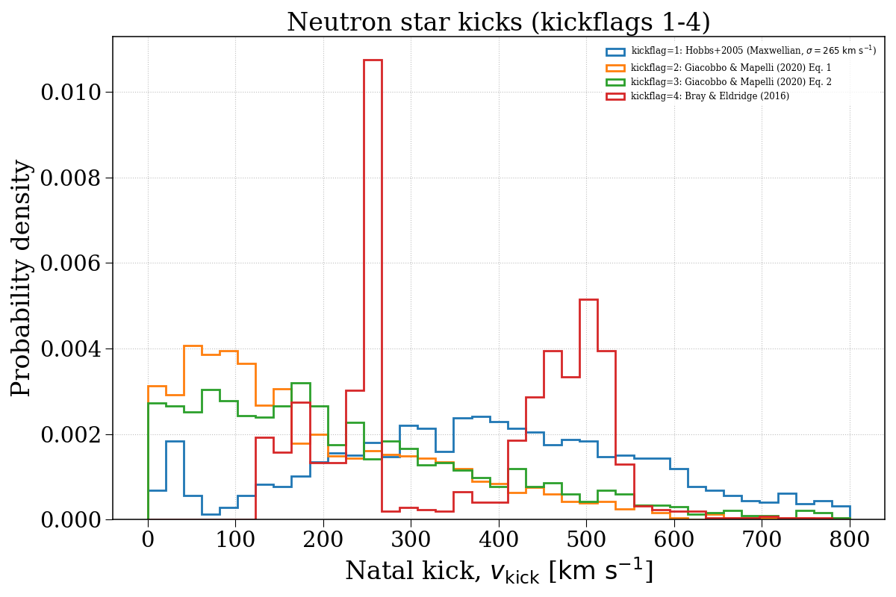
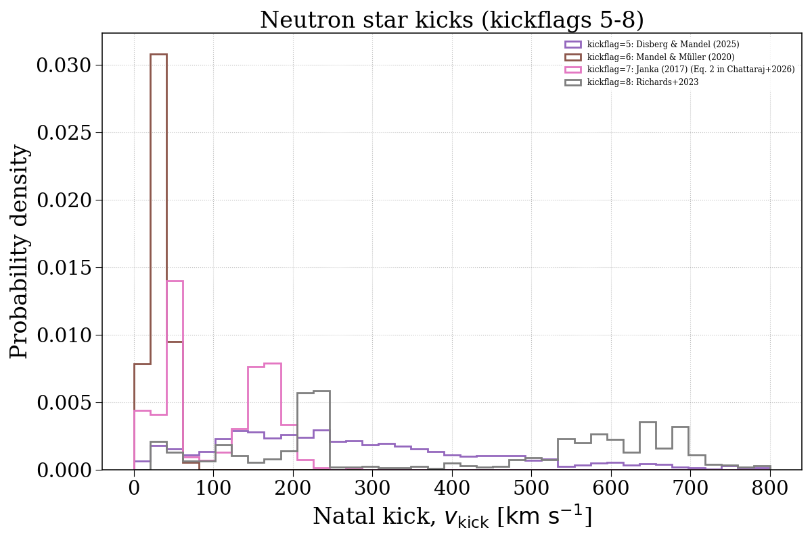
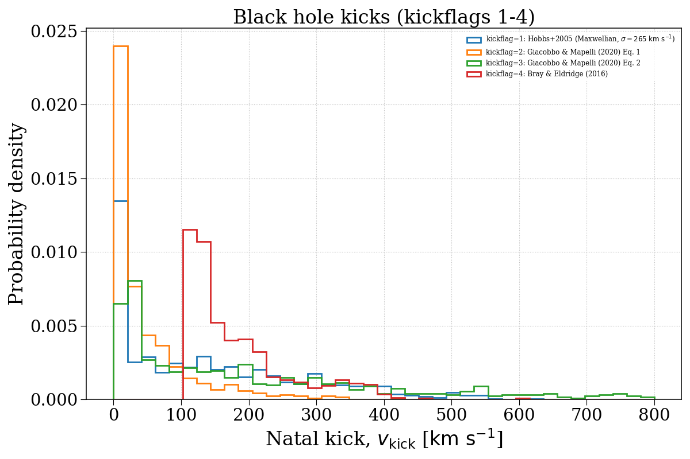
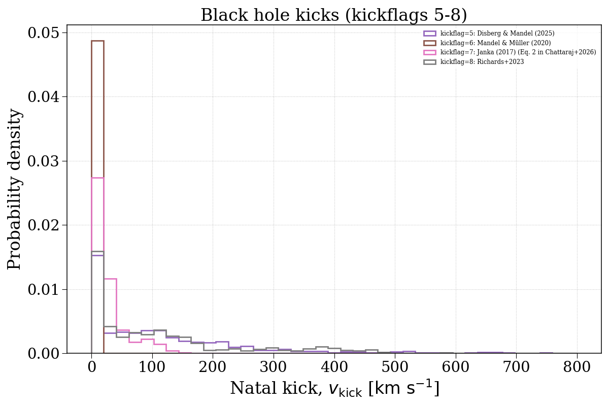

Note
Go to the end to download the full example code.
kickflag¶
This example demonstrates how changing the kickflag parameter can affect the natal kick velocity distributions of compact objects. We separate this into neutron stars and black holes.




Evolving population with kickflag = 1...
Evolving: 0%| | 0/2004 [00:00<?, ?sys/s]
Evolving: 1%|▏ | 28/2004 [00:00<00:07, 268.49sys/s]
Evolving: 3%|▎ | 55/2004 [00:00<00:14, 137.45sys/s]
Evolving: 4%|▎ | 73/2004 [00:00<00:14, 136.15sys/s]
Evolving: 4%|▍ | 89/2004 [00:00<00:13, 137.10sys/s]
Evolving: 5%|▌ | 104/2004 [00:00<00:14, 130.14sys/s]
Evolving: 6%|▌ | 120/2004 [00:00<00:13, 136.77sys/s]
Evolving: 7%|▋ | 135/2004 [00:01<00:20, 90.40sys/s]
Evolving: 8%|▊ | 161/2004 [00:01<00:14, 122.97sys/s]
Evolving: 9%|▉ | 177/2004 [00:01<00:14, 128.07sys/s]
Evolving: 10%|▉ | 193/2004 [00:01<00:13, 130.68sys/s]
Evolving: 10%|█ | 208/2004 [00:01<00:13, 131.25sys/s]
Evolving: 11%|█ | 223/2004 [00:01<00:13, 132.79sys/s]
Evolving: 12%|█▏ | 238/2004 [00:01<00:13, 131.43sys/s]
Evolving: 13%|█▎ | 254/2004 [00:01<00:12, 137.30sys/s]
Evolving: 13%|█▎ | 269/2004 [00:02<00:15, 114.06sys/s]
Evolving: 14%|█▍ | 290/2004 [00:02<00:12, 135.55sys/s]
Evolving: 15%|█▌ | 305/2004 [00:02<00:13, 127.16sys/s]
Evolving: 16%|█▌ | 322/2004 [00:02<00:12, 136.86sys/s]
Evolving: 17%|█▋ | 337/2004 [00:02<00:12, 135.77sys/s]
Evolving: 18%|█▊ | 352/2004 [00:02<00:14, 113.74sys/s]
Evolving: 18%|█▊ | 370/2004 [00:02<00:13, 119.38sys/s]
Evolving: 19%|█▉ | 386/2004 [00:03<00:12, 127.44sys/s]
Evolving: 20%|██ | 401/2004 [00:03<00:12, 130.34sys/s]
Evolving: 21%|██ | 416/2004 [00:03<00:12, 130.03sys/s]
Evolving: 22%|██▏ | 431/2004 [00:03<00:11, 131.36sys/s]
Evolving: 22%|██▏ | 448/2004 [00:03<00:11, 139.41sys/s]
Evolving: 23%|██▎ | 463/2004 [00:03<00:16, 95.63sys/s]
Evolving: 25%|██▍ | 491/2004 [00:03<00:11, 131.77sys/s]
Evolving: 25%|██▌ | 507/2004 [00:03<00:11, 134.04sys/s]
Evolving: 26%|██▌ | 523/2004 [00:04<00:11, 133.80sys/s]
Evolving: 27%|██▋ | 538/2004 [00:04<00:11, 129.73sys/s]
Evolving: 28%|██▊ | 552/2004 [00:04<00:13, 107.86sys/s]
Evolving: 28%|██▊ | 571/2004 [00:04<00:15, 92.15sys/s]
Evolving: 29%|██▉ | 582/2004 [00:04<00:15, 93.04sys/s]
Evolving: 31%|███ | 614/2004 [00:04<00:09, 139.89sys/s]
Evolving: 31%|███▏ | 631/2004 [00:04<00:09, 139.30sys/s]
Evolving: 32%|███▏ | 647/2004 [00:05<00:09, 142.22sys/s]
Evolving: 33%|███▎ | 663/2004 [00:05<00:09, 138.32sys/s]
Evolving: 34%|███▍ | 678/2004 [00:05<00:09, 135.56sys/s]
Evolving: 35%|███▍ | 693/2004 [00:05<00:11, 112.14sys/s]
Evolving: 36%|███▌ | 714/2004 [00:05<00:09, 131.09sys/s]
Evolving: 36%|███▋ | 729/2004 [00:05<00:09, 134.24sys/s]
Evolving: 37%|███▋ | 744/2004 [00:06<00:12, 97.00sys/s]
Evolving: 38%|███▊ | 764/2004 [00:06<00:13, 92.19sys/s]
Evolving: 39%|███▉ | 788/2004 [00:06<00:12, 94.97sys/s]
Evolving: 41%|████ | 817/2004 [00:06<00:11, 100.18sys/s]
Evolving: 42%|████▏ | 832/2004 [00:06<00:11, 105.49sys/s]
Evolving: 43%|████▎ | 858/2004 [00:06<00:08, 132.73sys/s]
Evolving: 44%|████▎ | 874/2004 [00:07<00:08, 129.68sys/s]
Evolving: 44%|████▍ | 889/2004 [00:07<00:08, 130.77sys/s]
Evolving: 45%|████▌ | 904/2004 [00:07<00:08, 133.31sys/s]
Evolving: 46%|████▌ | 919/2004 [00:07<00:10, 106.57sys/s]
Evolving: 47%|████▋ | 940/2004 [00:07<00:11, 89.95sys/s]
Evolving: 48%|████▊ | 971/2004 [00:07<00:08, 117.05sys/s]
Evolving: 49%|████▉ | 985/2004 [00:08<00:08, 120.63sys/s]
Evolving: 50%|████▉ | 999/2004 [00:08<00:10, 92.08sys/s]
Evolving: 51%|█████ | 1024/2004 [00:08<00:08, 115.25sys/s]
Evolving: 52%|█████▏ | 1039/2004 [00:08<00:08, 119.96sys/s]
Evolving: 53%|█████▎ | 1053/2004 [00:08<00:07, 121.21sys/s]
Evolving: 53%|█████▎ | 1067/2004 [00:08<00:09, 98.51sys/s]
Evolving: 54%|█████▍ | 1079/2004 [00:09<00:09, 95.94sys/s]
Evolving: 55%|█████▌ | 1104/2004 [00:09<00:07, 127.06sys/s]
Evolving: 56%|█████▌ | 1122/2004 [00:09<00:06, 134.48sys/s]
Evolving: 57%|█████▋ | 1138/2004 [00:09<00:06, 136.65sys/s]
Evolving: 58%|█████▊ | 1153/2004 [00:09<00:06, 123.57sys/s]
Evolving: 58%|█████▊ | 1167/2004 [00:09<00:07, 116.75sys/s]
Evolving: 59%|█████▉ | 1180/2004 [00:09<00:09, 91.31sys/s]
Evolving: 60%|█████▉ | 1198/2004 [00:10<00:08, 92.41sys/s]
Evolving: 61%|██████▏ | 1232/2004 [00:10<00:05, 136.43sys/s]
Evolving: 62%|██████▏ | 1248/2004 [00:10<00:05, 139.08sys/s]
Evolving: 63%|██████▎ | 1264/2004 [00:10<00:05, 135.95sys/s]
Evolving: 64%|██████▍ | 1279/2004 [00:10<00:05, 137.18sys/s]
Evolving: 65%|██████▍ | 1294/2004 [00:10<00:06, 104.07sys/s]
Evolving: 65%|██████▌ | 1311/2004 [00:11<00:07, 91.33sys/s]
Evolving: 67%|██████▋ | 1338/2004 [00:11<00:05, 120.39sys/s]
Evolving: 68%|██████▊ | 1360/2004 [00:11<00:05, 107.67sys/s]
Evolving: 69%|██████▉ | 1382/2004 [00:11<00:05, 107.63sys/s]
Evolving: 70%|███████ | 1409/2004 [00:11<00:05, 114.43sys/s]
Evolving: 71%|███████ | 1423/2004 [00:12<00:05, 97.84sys/s]
Evolving: 72%|███████▏ | 1452/2004 [00:12<00:04, 129.79sys/s]
Evolving: 73%|███████▎ | 1469/2004 [00:12<00:04, 133.17sys/s]
Evolving: 74%|███████▍ | 1485/2004 [00:12<00:03, 138.34sys/s]
Evolving: 75%|███████▍ | 1501/2004 [00:12<00:03, 140.15sys/s]
Evolving: 76%|███████▌ | 1517/2004 [00:12<00:03, 139.21sys/s]
Evolving: 76%|███████▋ | 1532/2004 [00:12<00:03, 134.12sys/s]
Evolving: 77%|███████▋ | 1546/2004 [00:12<00:03, 132.47sys/s]
Evolving: 78%|███████▊ | 1560/2004 [00:13<00:03, 117.18sys/s]
Evolving: 78%|███████▊ | 1573/2004 [00:13<00:04, 95.89sys/s]
Evolving: 80%|███████▉ | 1594/2004 [00:13<00:03, 113.09sys/s]
Evolving: 80%|████████ | 1607/2004 [00:13<00:03, 116.21sys/s]
Evolving: 81%|████████ | 1620/2004 [00:13<00:03, 96.26sys/s]
Evolving: 82%|████████▏ | 1641/2004 [00:13<00:03, 119.73sys/s]
Evolving: 83%|████████▎ | 1655/2004 [00:14<00:03, 90.40sys/s]
Evolving: 84%|████████▎ | 1675/2004 [00:14<00:02, 110.98sys/s]
Evolving: 85%|████████▍ | 1694/2004 [00:14<00:02, 128.13sys/s]
Evolving: 85%|████████▌ | 1710/2004 [00:14<00:02, 125.87sys/s]
Evolving: 86%|████████▌ | 1725/2004 [00:14<00:02, 130.56sys/s]
Evolving: 87%|████████▋ | 1740/2004 [00:14<00:02, 96.11sys/s]
Evolving: 88%|████████▊ | 1769/2004 [00:15<00:02, 90.66sys/s]
Evolving: 90%|████████▉ | 1794/2004 [00:15<00:02, 104.45sys/s]
Evolving: 90%|█████████ | 1809/2004 [00:15<00:01, 100.87sys/s]
Evolving: 92%|█████████▏| 1840/2004 [00:15<00:01, 138.00sys/s]
Evolving: 93%|█████████▎| 1857/2004 [00:15<00:01, 131.43sys/s]
Evolving: 93%|█████████▎| 1873/2004 [00:15<00:01, 119.50sys/s]
Evolving: 94%|█████████▍| 1892/2004 [00:15<00:00, 132.90sys/s]
Evolving: 95%|█████████▌| 1907/2004 [00:16<00:00, 132.43sys/s]
Evolving: 96%|█████████▌| 1922/2004 [00:16<00:00, 134.61sys/s]
Evolving: 97%|█████████▋| 1937/2004 [00:16<00:00, 95.41sys/s]
Evolving: 98%|█████████▊| 1970/2004 [00:16<00:00, 139.21sys/s]
Evolving: 99%|█████████▉| 1988/2004 [00:16<00:00, 147.26sys/s]
Evolving: 100%|██████████| 2004/2004 [00:16<00:00, 119.03sys/s]
[Time taken: 17.1663 seconds]
Evolving population with kickflag = 2...
Evolving: 0%| | 0/2004 [00:00<?, ?sys/s]
Evolving: 0%| | 5/2004 [00:00<00:43, 46.05sys/s]
Evolving: 1%| | 17/2004 [00:00<00:24, 81.30sys/s]
Evolving: 2%|▏ | 36/2004 [00:00<00:16, 122.85sys/s]
Evolving: 2%|▏ | 49/2004 [00:00<00:22, 86.90sys/s]
Evolving: 3%|▎ | 69/2004 [00:00<00:17, 108.34sys/s]
Evolving: 4%|▍ | 90/2004 [00:00<00:14, 132.90sys/s]
Evolving: 5%|▌ | 105/2004 [00:00<00:15, 125.32sys/s]
Evolving: 6%|▌ | 120/2004 [00:01<00:14, 125.73sys/s]
Evolving: 7%|▋ | 134/2004 [00:01<00:19, 95.13sys/s]
Evolving: 8%|▊ | 159/2004 [00:01<00:14, 124.21sys/s]
Evolving: 9%|▊ | 174/2004 [00:01<00:14, 129.08sys/s]
Evolving: 9%|▉ | 189/2004 [00:01<00:15, 119.36sys/s]
Evolving: 10%|█ | 205/2004 [00:01<00:14, 122.08sys/s]
Evolving: 11%|█ | 224/2004 [00:01<00:13, 133.79sys/s]
Evolving: 12%|█▏ | 239/2004 [00:01<00:13, 135.49sys/s]
Evolving: 13%|█▎ | 255/2004 [00:02<00:12, 141.74sys/s]
Evolving: 13%|█▎ | 270/2004 [00:02<00:15, 112.94sys/s]
Evolving: 15%|█▍ | 292/2004 [00:02<00:12, 137.06sys/s]
Evolving: 15%|█▌ | 308/2004 [00:02<00:12, 138.34sys/s]
Evolving: 16%|█▌ | 323/2004 [00:02<00:12, 135.26sys/s]
Evolving: 17%|█▋ | 338/2004 [00:02<00:12, 131.69sys/s]
Evolving: 18%|█▊ | 352/2004 [00:02<00:14, 111.76sys/s]
Evolving: 18%|█▊ | 370/2004 [00:03<00:14, 116.63sys/s]
Evolving: 20%|█▉ | 392/2004 [00:03<00:12, 126.23sys/s]
Evolving: 21%|██ | 412/2004 [00:03<00:11, 140.41sys/s]
Evolving: 21%|██▏ | 427/2004 [00:03<00:11, 138.16sys/s]
Evolving: 22%|██▏ | 444/2004 [00:03<00:10, 145.03sys/s]
Evolving: 23%|██▎ | 459/2004 [00:03<00:16, 95.90sys/s]
Evolving: 25%|██▍ | 491/2004 [00:03<00:11, 137.34sys/s]
Evolving: 25%|██▌ | 508/2004 [00:04<00:10, 136.17sys/s]
Evolving: 26%|██▌ | 524/2004 [00:04<00:11, 129.29sys/s]
Evolving: 27%|██▋ | 541/2004 [00:04<00:12, 115.16sys/s]
Evolving: 28%|██▊ | 561/2004 [00:04<00:11, 127.84sys/s]
Evolving: 29%|██▊ | 576/2004 [00:04<00:14, 98.48sys/s]
Evolving: 30%|██▉ | 598/2004 [00:04<00:11, 120.78sys/s]
Evolving: 31%|███ | 615/2004 [00:05<00:11, 125.94sys/s]
Evolving: 32%|███▏ | 633/2004 [00:05<00:10, 135.16sys/s]
Evolving: 32%|███▏ | 648/2004 [00:05<00:10, 133.61sys/s]
Evolving: 33%|███▎ | 663/2004 [00:05<00:09, 136.39sys/s]
Evolving: 34%|███▍ | 678/2004 [00:05<00:09, 137.86sys/s]
Evolving: 35%|███▍ | 693/2004 [00:05<00:12, 106.70sys/s]
Evolving: 36%|███▌ | 716/2004 [00:05<00:09, 134.03sys/s]
Evolving: 37%|███▋ | 732/2004 [00:06<00:13, 93.60sys/s]
Evolving: 38%|███▊ | 760/2004 [00:06<00:09, 128.31sys/s]
Evolving: 39%|███▉ | 777/2004 [00:06<00:10, 114.17sys/s]
Evolving: 40%|███▉ | 792/2004 [00:06<00:12, 95.26sys/s]
Evolving: 41%|████ | 817/2004 [00:06<00:12, 93.10sys/s]
Evolving: 42%|████▏ | 845/2004 [00:07<00:10, 113.77sys/s]
Evolving: 43%|████▎ | 865/2004 [00:07<00:09, 126.54sys/s]
Evolving: 44%|████▍ | 880/2004 [00:07<00:08, 128.48sys/s]
Evolving: 45%|████▍ | 895/2004 [00:07<00:08, 130.23sys/s]
Evolving: 45%|████▌ | 910/2004 [00:07<00:11, 92.44sys/s]
Evolving: 47%|████▋ | 940/2004 [00:07<00:10, 98.27sys/s]
Evolving: 48%|████▊ | 969/2004 [00:08<00:08, 127.63sys/s]
Evolving: 49%|████▉ | 985/2004 [00:08<00:08, 124.50sys/s]
Evolving: 50%|████▉ | 1000/2004 [00:08<00:10, 94.95sys/s]
Evolving: 51%|█████ | 1024/2004 [00:08<00:08, 118.06sys/s]
Evolving: 52%|█████▏ | 1039/2004 [00:08<00:08, 120.38sys/s]
Evolving: 53%|█████▎ | 1054/2004 [00:08<00:07, 119.94sys/s]
Evolving: 53%|█████▎ | 1068/2004 [00:09<00:09, 97.76sys/s]
Evolving: 54%|█████▍ | 1080/2004 [00:09<00:09, 97.29sys/s]
Evolving: 55%|█████▌ | 1105/2004 [00:09<00:07, 126.76sys/s]
Evolving: 56%|█████▌ | 1121/2004 [00:09<00:06, 130.32sys/s]
Evolving: 57%|█████▋ | 1137/2004 [00:09<00:06, 135.87sys/s]
Evolving: 57%|█████▋ | 1152/2004 [00:09<00:07, 120.09sys/s]
Evolving: 58%|█████▊ | 1167/2004 [00:09<00:06, 119.82sys/s]
Evolving: 59%|█████▉ | 1180/2004 [00:10<00:09, 91.50sys/s]
Evolving: 60%|█████▉ | 1198/2004 [00:10<00:08, 92.92sys/s]
Evolving: 61%|██████▏ | 1232/2004 [00:10<00:05, 142.02sys/s]
Evolving: 62%|██████▏ | 1250/2004 [00:10<00:06, 124.30sys/s]
Evolving: 63%|██████▎ | 1271/2004 [00:10<00:05, 141.19sys/s]
Evolving: 64%|██████▍ | 1288/2004 [00:10<00:07, 102.23sys/s]
Evolving: 65%|██████▌ | 1311/2004 [00:11<00:06, 101.20sys/s]
Evolving: 67%|██████▋ | 1338/2004 [00:11<00:05, 128.60sys/s]
Evolving: 68%|██████▊ | 1358/2004 [00:11<00:04, 139.63sys/s]
Evolving: 69%|██████▊ | 1375/2004 [00:11<00:04, 132.94sys/s]
Evolving: 69%|██████▉ | 1391/2004 [00:11<00:05, 111.32sys/s]
Evolving: 70%|███████ | 1409/2004 [00:11<00:05, 102.75sys/s]
Evolving: 71%|███████ | 1423/2004 [00:12<00:06, 87.68sys/s]
Evolving: 73%|███████▎ | 1456/2004 [00:12<00:04, 129.83sys/s]
Evolving: 74%|███████▎ | 1473/2004 [00:12<00:04, 131.19sys/s]
Evolving: 74%|███████▍ | 1490/2004 [00:12<00:03, 136.88sys/s]
Evolving: 75%|███████▌ | 1506/2004 [00:12<00:03, 134.87sys/s]
Evolving: 76%|███████▌ | 1521/2004 [00:12<00:03, 137.14sys/s]
Evolving: 77%|███████▋ | 1536/2004 [00:12<00:03, 122.25sys/s]
Evolving: 77%|███████▋ | 1552/2004 [00:13<00:03, 127.48sys/s]
Evolving: 78%|███████▊ | 1566/2004 [00:13<00:03, 126.27sys/s]
Evolving: 79%|███████▉ | 1580/2004 [00:13<00:04, 89.33sys/s]
Evolving: 80%|████████ | 1607/2004 [00:13<00:03, 123.77sys/s]
Evolving: 81%|████████ | 1623/2004 [00:13<00:03, 104.95sys/s]
Evolving: 82%|████████▏ | 1639/2004 [00:13<00:03, 114.93sys/s]
Evolving: 82%|████████▏ | 1653/2004 [00:14<00:04, 87.43sys/s]
Evolving: 84%|████████▎ | 1675/2004 [00:14<00:02, 111.00sys/s]
Evolving: 85%|████████▍ | 1694/2004 [00:14<00:02, 127.34sys/s]
Evolving: 85%|████████▌ | 1710/2004 [00:14<00:02, 119.72sys/s]
Evolving: 86%|████████▌ | 1727/2004 [00:14<00:02, 129.28sys/s]
Evolving: 87%|████████▋ | 1742/2004 [00:14<00:02, 100.65sys/s]
Evolving: 88%|████████▊ | 1769/2004 [00:15<00:02, 93.12sys/s]
Evolving: 90%|████████▉ | 1794/2004 [00:15<00:02, 102.11sys/s]
Evolving: 90%|█████████ | 1809/2004 [00:15<00:01, 99.28sys/s]
Evolving: 92%|█████████▏| 1843/2004 [00:15<00:01, 130.61sys/s]
Evolving: 93%|█████████▎| 1859/2004 [00:15<00:01, 103.16sys/s]
Evolving: 94%|█████████▍| 1891/2004 [00:16<00:00, 138.38sys/s]
Evolving: 95%|█████████▌| 1909/2004 [00:16<00:00, 132.71sys/s]
Evolving: 96%|█████████▌| 1925/2004 [00:16<00:00, 137.69sys/s]
Evolving: 97%|█████████▋| 1941/2004 [00:16<00:00, 102.69sys/s]
Evolving: 98%|█████████▊| 1973/2004 [00:16<00:00, 140.61sys/s]
Evolving: 99%|█████████▉| 1991/2004 [00:16<00:00, 144.53sys/s]
Evolving: 100%|██████████| 2004/2004 [00:16<00:00, 118.16sys/s]
[Time taken: 17.1328 seconds]
Evolving population with kickflag = 3...
Evolving: 0%| | 0/2004 [00:00<?, ?sys/s]
Evolving: 0%| | 5/2004 [00:00<00:42, 46.76sys/s]
Evolving: 1%| | 17/2004 [00:00<00:23, 83.51sys/s]
Evolving: 2%|▏ | 36/2004 [00:00<00:15, 128.04sys/s]
Evolving: 2%|▏ | 49/2004 [00:00<00:22, 86.97sys/s]
Evolving: 3%|▎ | 69/2004 [00:00<00:17, 112.36sys/s]
Evolving: 4%|▍ | 85/2004 [00:00<00:15, 122.31sys/s]
Evolving: 5%|▍ | 99/2004 [00:00<00:15, 121.87sys/s]
Evolving: 6%|▌ | 115/2004 [00:01<00:14, 127.99sys/s]
Evolving: 6%|▋ | 130/2004 [00:01<00:20, 89.43sys/s]
Evolving: 8%|▊ | 158/2004 [00:01<00:14, 128.50sys/s]
Evolving: 9%|▊ | 175/2004 [00:01<00:13, 131.63sys/s]
Evolving: 10%|▉ | 191/2004 [00:01<00:14, 127.58sys/s]
Evolving: 10%|█ | 206/2004 [00:01<00:13, 129.22sys/s]
Evolving: 11%|█ | 222/2004 [00:01<00:13, 133.57sys/s]
Evolving: 12%|█▏ | 237/2004 [00:01<00:12, 136.74sys/s]
Evolving: 13%|█▎ | 252/2004 [00:02<00:13, 132.85sys/s]
Evolving: 13%|█▎ | 266/2004 [00:02<00:15, 108.89sys/s]
Evolving: 14%|█▍ | 290/2004 [00:02<00:12, 139.36sys/s]
Evolving: 15%|█▌ | 306/2004 [00:02<00:12, 133.30sys/s]
Evolving: 16%|█▌ | 324/2004 [00:02<00:12, 139.76sys/s]
Evolving: 17%|█▋ | 339/2004 [00:02<00:12, 138.65sys/s]
Evolving: 18%|█▊ | 354/2004 [00:02<00:13, 121.87sys/s]
Evolving: 18%|█▊ | 370/2004 [00:03<00:14, 112.80sys/s]
Evolving: 20%|█▉ | 392/2004 [00:03<00:12, 127.50sys/s]
Evolving: 20%|██ | 408/2004 [00:03<00:11, 133.15sys/s]
Evolving: 21%|██ | 424/2004 [00:03<00:11, 136.47sys/s]
Evolving: 22%|██▏ | 441/2004 [00:03<00:11, 137.39sys/s]
Evolving: 23%|██▎ | 458/2004 [00:03<00:10, 140.78sys/s]
Evolving: 24%|██▎ | 473/2004 [00:03<00:13, 111.88sys/s]
Evolving: 25%|██▍ | 492/2004 [00:03<00:11, 126.31sys/s]
Evolving: 25%|██▌ | 508/2004 [00:04<00:11, 130.88sys/s]
Evolving: 26%|██▌ | 523/2004 [00:04<00:10, 134.90sys/s]
Evolving: 27%|██▋ | 538/2004 [00:04<00:11, 132.23sys/s]
Evolving: 28%|██▊ | 552/2004 [00:04<00:13, 110.79sys/s]
Evolving: 28%|██▊ | 571/2004 [00:04<00:16, 89.17sys/s]
Evolving: 30%|██▉ | 599/2004 [00:04<00:11, 122.71sys/s]
Evolving: 31%|███ | 615/2004 [00:04<00:10, 127.55sys/s]
Evolving: 31%|███▏ | 631/2004 [00:05<00:10, 128.05sys/s]
Evolving: 32%|███▏ | 649/2004 [00:05<00:09, 138.19sys/s]
Evolving: 33%|███▎ | 664/2004 [00:05<00:10, 131.26sys/s]
Evolving: 34%|███▍ | 680/2004 [00:05<00:09, 137.76sys/s]
Evolving: 35%|███▍ | 695/2004 [00:05<00:11, 111.46sys/s]
Evolving: 36%|███▌ | 713/2004 [00:05<00:10, 126.61sys/s]
Evolving: 36%|███▋ | 730/2004 [00:05<00:09, 135.36sys/s]
Evolving: 37%|███▋ | 745/2004 [00:06<00:12, 99.04sys/s]
Evolving: 38%|███▊ | 764/2004 [00:06<00:13, 90.60sys/s]
Evolving: 39%|███▉ | 788/2004 [00:06<00:12, 94.84sys/s]
Evolving: 41%|████ | 817/2004 [00:06<00:11, 102.38sys/s]
Evolving: 42%|████▏ | 832/2004 [00:06<00:10, 109.54sys/s]
Evolving: 43%|████▎ | 856/2004 [00:07<00:08, 128.87sys/s]
Evolving: 43%|████▎ | 871/2004 [00:07<00:09, 121.39sys/s]
Evolving: 44%|████▍ | 889/2004 [00:07<00:08, 132.87sys/s]
Evolving: 45%|████▌ | 906/2004 [00:07<00:07, 137.85sys/s]
Evolving: 46%|████▌ | 921/2004 [00:07<00:09, 112.48sys/s]
Evolving: 47%|████▋ | 939/2004 [00:07<00:08, 127.08sys/s]
Evolving: 48%|████▊ | 954/2004 [00:07<00:09, 110.43sys/s]
Evolving: 48%|████▊ | 971/2004 [00:08<00:09, 110.15sys/s]
Evolving: 49%|████▉ | 983/2004 [00:08<00:09, 111.46sys/s]
Evolving: 50%|████▉ | 995/2004 [00:08<00:12, 81.26sys/s]
Evolving: 51%|█████ | 1023/2004 [00:08<00:08, 118.55sys/s]
Evolving: 52%|█████▏ | 1038/2004 [00:08<00:08, 115.26sys/s]
Evolving: 52%|█████▏ | 1052/2004 [00:08<00:08, 117.14sys/s]
Evolving: 53%|█████▎ | 1066/2004 [00:09<00:10, 93.51sys/s]
Evolving: 54%|█████▎ | 1077/2004 [00:09<00:10, 91.51sys/s]
Evolving: 55%|█████▌ | 1104/2004 [00:09<00:06, 129.02sys/s]
Evolving: 56%|█████▌ | 1120/2004 [00:09<00:06, 133.98sys/s]
Evolving: 57%|█████▋ | 1135/2004 [00:09<00:06, 136.51sys/s]
Evolving: 57%|█████▋ | 1150/2004 [00:09<00:06, 138.30sys/s]
Evolving: 58%|█████▊ | 1165/2004 [00:09<00:06, 129.63sys/s]
Evolving: 59%|█████▉ | 1179/2004 [00:10<00:09, 86.39sys/s]
Evolving: 60%|█████▉ | 1198/2004 [00:10<00:08, 92.76sys/s]
Evolving: 61%|██████▏ | 1230/2004 [00:10<00:05, 137.00sys/s]
Evolving: 62%|██████▏ | 1248/2004 [00:10<00:05, 135.17sys/s]
Evolving: 63%|██████▎ | 1264/2004 [00:10<00:05, 134.87sys/s]
Evolving: 64%|██████▍ | 1280/2004 [00:10<00:05, 131.03sys/s]
Evolving: 65%|██████▍ | 1295/2004 [00:10<00:06, 108.59sys/s]
Evolving: 65%|██████▌ | 1311/2004 [00:11<00:07, 90.40sys/s]
Evolving: 67%|██████▋ | 1338/2004 [00:11<00:05, 123.99sys/s]
Evolving: 68%|██████▊ | 1358/2004 [00:11<00:04, 138.20sys/s]
Evolving: 69%|██████▊ | 1375/2004 [00:11<00:04, 127.37sys/s]
Evolving: 69%|██████▉ | 1390/2004 [00:11<00:05, 104.80sys/s]
Evolving: 70%|███████ | 1409/2004 [00:11<00:05, 100.66sys/s]
Evolving: 71%|███████ | 1423/2004 [00:12<00:06, 86.97sys/s]
Evolving: 73%|███████▎ | 1456/2004 [00:12<00:04, 130.03sys/s]
Evolving: 74%|███████▎ | 1473/2004 [00:12<00:03, 133.54sys/s]
Evolving: 74%|███████▍ | 1490/2004 [00:12<00:03, 135.88sys/s]
Evolving: 75%|███████▌ | 1506/2004 [00:12<00:03, 137.20sys/s]
Evolving: 76%|███████▌ | 1522/2004 [00:12<00:03, 135.79sys/s]
Evolving: 77%|███████▋ | 1537/2004 [00:12<00:03, 127.17sys/s]
Evolving: 77%|███████▋ | 1552/2004 [00:12<00:03, 130.85sys/s]
Evolving: 78%|███████▊ | 1566/2004 [00:13<00:03, 122.45sys/s]
Evolving: 79%|███████▉ | 1579/2004 [00:13<00:04, 86.76sys/s]
Evolving: 80%|████████ | 1606/2004 [00:13<00:03, 119.31sys/s]
Evolving: 81%|████████ | 1621/2004 [00:13<00:03, 102.60sys/s]
Evolving: 82%|████████▏ | 1640/2004 [00:13<00:03, 117.61sys/s]
Evolving: 83%|████████▎ | 1654/2004 [00:14<00:03, 90.62sys/s]
Evolving: 84%|████████▎ | 1675/2004 [00:14<00:02, 112.56sys/s]
Evolving: 84%|████████▍ | 1692/2004 [00:14<00:02, 124.04sys/s]
Evolving: 85%|████████▌ | 1707/2004 [00:14<00:02, 126.02sys/s]
Evolving: 86%|████████▌ | 1722/2004 [00:14<00:02, 127.84sys/s]
Evolving: 87%|████████▋ | 1736/2004 [00:14<00:02, 128.10sys/s]
Evolving: 87%|████████▋ | 1750/2004 [00:14<00:02, 109.38sys/s]
Evolving: 88%|████████▊ | 1769/2004 [00:15<00:02, 83.40sys/s]
Evolving: 90%|████████▉ | 1794/2004 [00:15<00:02, 98.44sys/s]
Evolving: 90%|█████████ | 1809/2004 [00:15<00:02, 94.31sys/s]
Evolving: 92%|█████████▏| 1840/2004 [00:15<00:01, 132.92sys/s]
Evolving: 93%|█████████▎| 1857/2004 [00:15<00:01, 136.21sys/s]
Evolving: 93%|█████████▎| 1873/2004 [00:15<00:01, 121.30sys/s]
Evolving: 94%|█████████▍| 1891/2004 [00:16<00:00, 128.71sys/s]
Evolving: 95%|█████████▌| 1907/2004 [00:16<00:00, 135.28sys/s]
Evolving: 96%|█████████▌| 1922/2004 [00:16<00:00, 128.39sys/s]
Evolving: 97%|█████████▋| 1936/2004 [00:16<00:00, 90.08sys/s]
Evolving: 98%|█████████▊| 1973/2004 [00:16<00:00, 138.96sys/s]
Evolving: 99%|█████████▉| 1991/2004 [00:16<00:00, 144.61sys/s]
Evolving: 100%|██████████| 2004/2004 [00:16<00:00, 118.31sys/s]
[Time taken: 17.1123 seconds]
Evolving population with kickflag = 4...
Evolving: 0%| | 0/2004 [00:00<?, ?sys/s]
Evolving: 0%| | 5/2004 [00:00<00:45, 44.07sys/s]
Evolving: 1%| | 17/2004 [00:00<00:25, 79.10sys/s]
Evolving: 2%|▏ | 35/2004 [00:00<00:16, 119.13sys/s]
Evolving: 2%|▏ | 48/2004 [00:00<00:21, 90.31sys/s]
Evolving: 3%|▎ | 69/2004 [00:00<00:17, 109.73sys/s]
Evolving: 5%|▍ | 91/2004 [00:00<00:13, 138.15sys/s]
Evolving: 5%|▌ | 107/2004 [00:00<00:14, 131.99sys/s]
Evolving: 6%|▌ | 122/2004 [00:01<00:14, 134.31sys/s]
Evolving: 7%|▋ | 137/2004 [00:01<00:16, 111.17sys/s]
Evolving: 7%|▋ | 150/2004 [00:01<00:16, 112.03sys/s]
Evolving: 8%|▊ | 168/2004 [00:01<00:14, 125.08sys/s]
Evolving: 9%|▉ | 185/2004 [00:01<00:15, 118.47sys/s]
Evolving: 10%|█ | 205/2004 [00:01<00:13, 128.91sys/s]
Evolving: 11%|█ | 222/2004 [00:01<00:13, 136.86sys/s]
Evolving: 12%|█▏ | 238/2004 [00:01<00:12, 140.21sys/s]
Evolving: 13%|█▎ | 253/2004 [00:02<00:12, 137.64sys/s]
Evolving: 13%|█▎ | 268/2004 [00:02<00:15, 109.97sys/s]
Evolving: 15%|█▍ | 292/2004 [00:02<00:12, 133.67sys/s]
Evolving: 15%|█▌ | 308/2004 [00:02<00:12, 138.01sys/s]
Evolving: 16%|█▌ | 324/2004 [00:02<00:11, 143.23sys/s]
Evolving: 17%|█▋ | 339/2004 [00:02<00:11, 140.80sys/s]
Evolving: 18%|█▊ | 354/2004 [00:02<00:14, 115.96sys/s]
Evolving: 18%|█▊ | 370/2004 [00:03<00:14, 114.67sys/s]
Evolving: 20%|█▉ | 392/2004 [00:03<00:12, 128.78sys/s]
Evolving: 20%|██ | 407/2004 [00:03<00:12, 132.01sys/s]
Evolving: 21%|██ | 424/2004 [00:03<00:11, 138.43sys/s]
Evolving: 22%|██▏ | 440/2004 [00:03<00:10, 142.49sys/s]
Evolving: 23%|██▎ | 455/2004 [00:03<00:10, 141.23sys/s]
Evolving: 23%|██▎ | 470/2004 [00:03<00:14, 105.71sys/s]
Evolving: 25%|██▍ | 493/2004 [00:03<00:12, 120.86sys/s]
Evolving: 25%|██▌ | 510/2004 [00:04<00:11, 129.71sys/s]
Evolving: 26%|██▌ | 526/2004 [00:04<00:10, 136.44sys/s]
Evolving: 27%|██▋ | 541/2004 [00:04<00:13, 112.13sys/s]
Evolving: 28%|██▊ | 561/2004 [00:04<00:11, 129.94sys/s]
Evolving: 29%|██▊ | 576/2004 [00:04<00:14, 96.79sys/s]
Evolving: 30%|███ | 602/2004 [00:04<00:11, 122.19sys/s]
Evolving: 31%|███ | 619/2004 [00:04<00:10, 129.01sys/s]
Evolving: 32%|███▏ | 635/2004 [00:05<00:10, 134.19sys/s]
Evolving: 32%|███▏ | 650/2004 [00:05<00:10, 133.64sys/s]
Evolving: 33%|███▎ | 665/2004 [00:05<00:10, 132.28sys/s]
Evolving: 34%|███▍ | 680/2004 [00:05<00:10, 132.05sys/s]
Evolving: 35%|███▍ | 694/2004 [00:05<00:11, 112.13sys/s]
Evolving: 36%|███▌ | 715/2004 [00:05<00:10, 127.23sys/s]
Evolving: 37%|███▋ | 732/2004 [00:06<00:13, 94.59sys/s]
Evolving: 38%|███▊ | 763/2004 [00:06<00:09, 134.65sys/s]
Evolving: 39%|███▉ | 780/2004 [00:06<00:10, 120.96sys/s]
Evolving: 40%|███▉ | 795/2004 [00:06<00:12, 98.77sys/s]
Evolving: 41%|████ | 817/2004 [00:06<00:12, 92.70sys/s]
Evolving: 42%|████▏ | 832/2004 [00:06<00:11, 100.42sys/s]
Evolving: 43%|████▎ | 858/2004 [00:07<00:08, 128.06sys/s]
Evolving: 44%|████▎ | 874/2004 [00:07<00:09, 125.52sys/s]
Evolving: 44%|████▍ | 890/2004 [00:07<00:08, 128.59sys/s]
Evolving: 45%|████▌ | 905/2004 [00:07<00:08, 132.23sys/s]
Evolving: 46%|████▌ | 920/2004 [00:07<00:10, 107.33sys/s]
Evolving: 47%|████▋ | 940/2004 [00:07<00:11, 88.89sys/s]
Evolving: 48%|████▊ | 971/2004 [00:08<00:08, 117.70sys/s]
Evolving: 49%|████▉ | 987/2004 [00:08<00:08, 121.95sys/s]
Evolving: 50%|████▉ | 1001/2004 [00:08<00:10, 96.74sys/s]
Evolving: 51%|█████ | 1024/2004 [00:08<00:08, 117.57sys/s]
Evolving: 52%|█████▏ | 1038/2004 [00:08<00:08, 119.88sys/s]
Evolving: 52%|█████▏ | 1052/2004 [00:08<00:07, 124.35sys/s]
Evolving: 53%|█████▎ | 1066/2004 [00:08<00:09, 94.50sys/s]
Evolving: 54%|█████▍ | 1078/2004 [00:09<00:09, 97.13sys/s]
Evolving: 55%|█████▌ | 1104/2004 [00:09<00:06, 129.80sys/s]
Evolving: 56%|█████▌ | 1120/2004 [00:09<00:06, 136.13sys/s]
Evolving: 57%|█████▋ | 1136/2004 [00:09<00:06, 138.85sys/s]
Evolving: 57%|█████▋ | 1151/2004 [00:09<00:07, 117.55sys/s]
Evolving: 58%|█████▊ | 1167/2004 [00:09<00:06, 123.21sys/s]
Evolving: 59%|█████▉ | 1181/2004 [00:09<00:08, 95.66sys/s]
Evolving: 60%|█████▉ | 1198/2004 [00:10<00:08, 94.29sys/s]
Evolving: 61%|██████▏ | 1231/2004 [00:10<00:05, 134.88sys/s]
Evolving: 62%|██████▏ | 1247/2004 [00:10<00:05, 135.27sys/s]
Evolving: 63%|██████▎ | 1262/2004 [00:10<00:05, 133.45sys/s]
Evolving: 64%|██████▍ | 1278/2004 [00:10<00:05, 138.77sys/s]
Evolving: 65%|██████▍ | 1293/2004 [00:10<00:06, 104.35sys/s]
Evolving: 65%|██████▌ | 1311/2004 [00:11<00:07, 92.01sys/s]
Evolving: 67%|██████▋ | 1338/2004 [00:11<00:05, 125.27sys/s]
Evolving: 68%|██████▊ | 1360/2004 [00:11<00:06, 105.02sys/s]
Evolving: 69%|██████▉ | 1382/2004 [00:11<00:05, 106.94sys/s]
Evolving: 70%|███████ | 1409/2004 [00:11<00:05, 114.62sys/s]
Evolving: 71%|███████ | 1423/2004 [00:12<00:05, 97.42sys/s]
Evolving: 73%|███████▎ | 1456/2004 [00:12<00:04, 136.31sys/s]
Evolving: 74%|███████▎ | 1474/2004 [00:12<00:03, 139.44sys/s]
Evolving: 74%|███████▍ | 1491/2004 [00:12<00:03, 141.96sys/s]
Evolving: 75%|███████▌ | 1508/2004 [00:12<00:03, 140.55sys/s]
Evolving: 76%|███████▌ | 1524/2004 [00:12<00:03, 138.97sys/s]
Evolving: 77%|███████▋ | 1539/2004 [00:12<00:03, 130.44sys/s]
Evolving: 78%|███████▊ | 1554/2004 [00:12<00:03, 134.73sys/s]
Evolving: 78%|███████▊ | 1569/2004 [00:13<00:04, 90.63sys/s]
Evolving: 80%|███████▉ | 1594/2004 [00:13<00:03, 117.70sys/s]
Evolving: 80%|████████ | 1609/2004 [00:13<00:03, 123.70sys/s]
Evolving: 81%|████████ | 1624/2004 [00:13<00:03, 105.57sys/s]
Evolving: 82%|████████▏ | 1639/2004 [00:13<00:03, 113.66sys/s]
Evolving: 82%|████████▏ | 1652/2004 [00:14<00:04, 87.06sys/s]
Evolving: 84%|████████▍ | 1679/2004 [00:14<00:02, 119.18sys/s]
Evolving: 85%|████████▍ | 1695/2004 [00:14<00:02, 125.98sys/s]
Evolving: 85%|████████▌ | 1710/2004 [00:14<00:02, 124.68sys/s]
Evolving: 86%|████████▌ | 1725/2004 [00:14<00:02, 128.25sys/s]
Evolving: 87%|████████▋ | 1739/2004 [00:14<00:02, 129.77sys/s]
Evolving: 87%|████████▋ | 1753/2004 [00:14<00:02, 114.72sys/s]
Evolving: 88%|████████▊ | 1769/2004 [00:15<00:02, 81.95sys/s]
Evolving: 90%|████████▉ | 1794/2004 [00:15<00:02, 100.91sys/s]
Evolving: 90%|█████████ | 1809/2004 [00:15<00:02, 91.18sys/s]
Evolving: 92%|█████████▏| 1842/2004 [00:15<00:01, 134.55sys/s]
Evolving: 93%|█████████▎| 1859/2004 [00:15<00:01, 100.73sys/s]
Evolving: 94%|█████████▍| 1891/2004 [00:15<00:00, 138.06sys/s]
Evolving: 95%|█████████▌| 1910/2004 [00:16<00:00, 132.81sys/s]
Evolving: 96%|█████████▌| 1928/2004 [00:16<00:00, 141.67sys/s]
Evolving: 97%|█████████▋| 1945/2004 [00:16<00:00, 109.98sys/s]
Evolving: 98%|█████████▊| 1972/2004 [00:16<00:00, 137.27sys/s]
Evolving: 99%|█████████▉| 1989/2004 [00:16<00:00, 140.34sys/s]
Evolving: 100%|██████████| 2004/2004 [00:16<00:00, 118.86sys/s]
[Time taken: 17.0302 seconds]
Evolving population with kickflag = 5...
Evolving: 0%| | 0/2004 [00:00<?, ?sys/s]
Evolving: 0%| | 5/2004 [00:00<00:45, 44.26sys/s]
Evolving: 1%| | 17/2004 [00:00<00:26, 73.60sys/s]
Evolving: 2%|▏ | 39/2004 [00:00<00:27, 71.75sys/s]
Evolving: 3%|▎ | 69/2004 [00:00<00:15, 122.47sys/s]
Evolving: 4%|▍ | 87/2004 [00:00<00:14, 136.55sys/s]
Evolving: 5%|▌ | 103/2004 [00:00<00:14, 134.47sys/s]
Evolving: 6%|▌ | 118/2004 [00:01<00:14, 134.40sys/s]
Evolving: 7%|▋ | 133/2004 [00:01<00:19, 94.40sys/s]
Evolving: 7%|▋ | 145/2004 [00:01<00:18, 98.77sys/s]
Evolving: 9%|▊ | 172/2004 [00:01<00:14, 130.19sys/s]
Evolving: 9%|▉ | 187/2004 [00:01<00:14, 125.00sys/s]
Evolving: 10%|█ | 205/2004 [00:01<00:13, 133.59sys/s]
Evolving: 11%|█ | 220/2004 [00:01<00:13, 135.16sys/s]
Evolving: 12%|█▏ | 237/2004 [00:01<00:12, 139.18sys/s]
Evolving: 13%|█▎ | 252/2004 [00:02<00:12, 137.55sys/s]
Evolving: 13%|█▎ | 267/2004 [00:02<00:16, 106.68sys/s]
Evolving: 15%|█▍ | 293/2004 [00:02<00:12, 136.77sys/s]
Evolving: 15%|█▌ | 310/2004 [00:02<00:12, 138.73sys/s]
Evolving: 16%|█▋ | 327/2004 [00:02<00:11, 145.02sys/s]
Evolving: 17%|█▋ | 343/2004 [00:02<00:12, 128.83sys/s]
Evolving: 18%|█▊ | 357/2004 [00:02<00:12, 126.87sys/s]
Evolving: 19%|█▊ | 371/2004 [00:03<00:14, 115.88sys/s]
Evolving: 20%|█▉ | 392/2004 [00:03<00:12, 127.13sys/s]
Evolving: 20%|██ | 409/2004 [00:03<00:11, 134.94sys/s]
Evolving: 21%|██ | 423/2004 [00:03<00:11, 132.36sys/s]
Evolving: 22%|██▏ | 440/2004 [00:03<00:11, 139.87sys/s]
Evolving: 23%|██▎ | 455/2004 [00:03<00:11, 140.24sys/s]
Evolving: 23%|██▎ | 470/2004 [00:03<00:16, 95.41sys/s]
Evolving: 24%|██▍ | 484/2004 [00:04<00:14, 104.22sys/s]
Evolving: 25%|██▍ | 497/2004 [00:04<00:13, 108.03sys/s]
Evolving: 26%|██▌ | 513/2004 [00:04<00:12, 118.61sys/s]
Evolving: 26%|██▋ | 528/2004 [00:04<00:12, 119.12sys/s]
Evolving: 27%|██▋ | 541/2004 [00:04<00:14, 104.26sys/s]
Evolving: 28%|██▊ | 561/2004 [00:04<00:11, 125.04sys/s]
Evolving: 29%|██▊ | 575/2004 [00:04<00:15, 91.51sys/s]
Evolving: 30%|██▉ | 600/2004 [00:05<00:11, 121.29sys/s]
Evolving: 31%|███ | 616/2004 [00:05<00:10, 128.86sys/s]
Evolving: 31%|███▏ | 631/2004 [00:05<00:10, 131.86sys/s]
Evolving: 32%|███▏ | 646/2004 [00:05<00:10, 134.64sys/s]
Evolving: 33%|███▎ | 661/2004 [00:05<00:09, 134.34sys/s]
Evolving: 34%|███▎ | 676/2004 [00:05<00:09, 134.86sys/s]
Evolving: 34%|███▍ | 691/2004 [00:05<00:12, 101.27sys/s]
Evolving: 36%|███▌ | 716/2004 [00:05<00:09, 129.01sys/s]
Evolving: 37%|███▋ | 732/2004 [00:06<00:13, 94.46sys/s]
Evolving: 38%|███▊ | 761/2004 [00:06<00:09, 130.22sys/s]
Evolving: 39%|███▉ | 778/2004 [00:06<00:10, 116.11sys/s]
Evolving: 40%|███▉ | 793/2004 [00:06<00:12, 96.70sys/s]
Evolving: 41%|████ | 817/2004 [00:06<00:12, 93.88sys/s]
Evolving: 42%|████▏ | 845/2004 [00:07<00:10, 112.59sys/s]
Evolving: 43%|████▎ | 866/2004 [00:07<00:09, 125.62sys/s]
Evolving: 44%|████▍ | 881/2004 [00:07<00:08, 127.55sys/s]
Evolving: 45%|████▍ | 896/2004 [00:07<00:08, 131.59sys/s]
Evolving: 45%|████▌ | 911/2004 [00:07<00:11, 95.99sys/s]
Evolving: 47%|████▋ | 939/2004 [00:07<00:08, 129.89sys/s]
Evolving: 48%|████▊ | 956/2004 [00:08<00:09, 114.63sys/s]
Evolving: 48%|████▊ | 970/2004 [00:08<00:08, 117.56sys/s]
Evolving: 49%|████▉ | 984/2004 [00:08<00:08, 115.32sys/s]
Evolving: 50%|████▉ | 997/2004 [00:08<00:12, 83.16sys/s]
Evolving: 51%|█████ | 1021/2004 [00:08<00:08, 111.15sys/s]
Evolving: 52%|█████▏ | 1036/2004 [00:08<00:08, 118.02sys/s]
Evolving: 52%|█████▏ | 1051/2004 [00:08<00:08, 116.48sys/s]
Evolving: 53%|█████▎ | 1065/2004 [00:09<00:10, 93.45sys/s]
Evolving: 54%|█████▎ | 1077/2004 [00:09<00:09, 95.39sys/s]
Evolving: 55%|█████▌ | 1103/2004 [00:09<00:06, 130.74sys/s]
Evolving: 56%|█████▌ | 1119/2004 [00:09<00:06, 131.54sys/s]
Evolving: 57%|█████▋ | 1134/2004 [00:09<00:06, 133.29sys/s]
Evolving: 57%|█████▋ | 1149/2004 [00:09<00:06, 131.22sys/s]
Evolving: 58%|█████▊ | 1163/2004 [00:09<00:06, 125.87sys/s]
Evolving: 59%|█████▊ | 1177/2004 [00:09<00:06, 125.03sys/s]
Evolving: 59%|█████▉ | 1190/2004 [00:10<00:08, 98.21sys/s]
Evolving: 60%|█████▉ | 1201/2004 [00:10<00:09, 86.06sys/s]
Evolving: 61%|██████▏ | 1230/2004 [00:10<00:05, 130.00sys/s]
Evolving: 62%|██████▏ | 1246/2004 [00:10<00:05, 127.53sys/s]
Evolving: 63%|██████▎ | 1261/2004 [00:10<00:05, 129.90sys/s]
Evolving: 64%|██████▎ | 1277/2004 [00:10<00:05, 130.32sys/s]
Evolving: 64%|██████▍ | 1291/2004 [00:11<00:07, 97.08sys/s]
Evolving: 65%|██████▌ | 1311/2004 [00:11<00:07, 92.86sys/s]
Evolving: 67%|██████▋ | 1338/2004 [00:11<00:05, 125.40sys/s]
Evolving: 68%|██████▊ | 1358/2004 [00:11<00:04, 134.68sys/s]
Evolving: 69%|██████▊ | 1374/2004 [00:11<00:04, 130.10sys/s]
Evolving: 69%|██████▉ | 1389/2004 [00:11<00:05, 107.07sys/s]
Evolving: 70%|███████ | 1409/2004 [00:12<00:05, 102.03sys/s]
Evolving: 71%|███████ | 1423/2004 [00:12<00:06, 87.11sys/s]
Evolving: 73%|███████▎ | 1456/2004 [00:12<00:04, 130.07sys/s]
Evolving: 74%|███████▎ | 1473/2004 [00:12<00:04, 129.84sys/s]
Evolving: 74%|███████▍ | 1489/2004 [00:12<00:03, 134.58sys/s]
Evolving: 75%|███████▌ | 1505/2004 [00:12<00:03, 134.33sys/s]
Evolving: 76%|███████▌ | 1520/2004 [00:12<00:03, 136.98sys/s]
Evolving: 77%|███████▋ | 1535/2004 [00:13<00:03, 130.17sys/s]
Evolving: 77%|███████▋ | 1549/2004 [00:13<00:03, 120.22sys/s]
Evolving: 78%|███████▊ | 1563/2004 [00:13<00:03, 119.03sys/s]
Evolving: 79%|███████▊ | 1576/2004 [00:13<00:04, 101.44sys/s]
Evolving: 79%|███████▉ | 1587/2004 [00:13<00:04, 103.27sys/s]
Evolving: 80%|████████ | 1607/2004 [00:13<00:03, 121.74sys/s]
Evolving: 81%|████████ | 1620/2004 [00:13<00:03, 96.73sys/s]
Evolving: 82%|████████▏ | 1639/2004 [00:14<00:03, 113.23sys/s]
Evolving: 82%|████████▏ | 1652/2004 [00:14<00:04, 85.32sys/s]
Evolving: 84%|████████▍ | 1681/2004 [00:14<00:02, 122.74sys/s]
Evolving: 85%|████████▍ | 1697/2004 [00:14<00:02, 124.82sys/s]
Evolving: 85%|████████▌ | 1712/2004 [00:14<00:02, 126.80sys/s]
Evolving: 86%|████████▌ | 1727/2004 [00:14<00:02, 128.52sys/s]
Evolving: 87%|████████▋ | 1741/2004 [00:14<00:02, 95.88sys/s]
Evolving: 88%|████████▊ | 1769/2004 [00:15<00:02, 92.07sys/s]
Evolving: 90%|████████▉ | 1794/2004 [00:15<00:02, 103.40sys/s]
Evolving: 90%|█████████ | 1809/2004 [00:15<00:02, 96.72sys/s]
Evolving: 92%|█████████▏| 1843/2004 [00:15<00:01, 138.74sys/s]
Evolving: 93%|█████████▎| 1861/2004 [00:16<00:01, 105.24sys/s]
Evolving: 94%|█████████▍| 1881/2004 [00:16<00:01, 118.91sys/s]
Evolving: 95%|█████████▌| 1906/2004 [00:16<00:00, 141.13sys/s]
Evolving: 96%|█████████▌| 1924/2004 [00:16<00:00, 141.62sys/s]
Evolving: 97%|█████████▋| 1941/2004 [00:16<00:00, 101.68sys/s]
Evolving: 99%|█████████▊| 1975/2004 [00:16<00:00, 143.65sys/s]
Evolving: 100%|█████████▉| 1995/2004 [00:16<00:00, 138.27sys/s]
Evolving: 100%|██████████| 2004/2004 [00:17<00:00, 117.16sys/s]
[Time taken: 17.2761 seconds]
Evolving population with kickflag = 6...
Evolving: 0%| | 0/2004 [00:00<?, ?sys/s]
Evolving: 0%| | 5/2004 [00:00<00:43, 46.01sys/s]
Evolving: 1%| | 17/2004 [00:00<00:24, 79.57sys/s]
Evolving: 2%|▏ | 38/2004 [00:00<00:15, 129.78sys/s]
Evolving: 3%|▎ | 52/2004 [00:00<00:20, 97.48sys/s]
Evolving: 3%|▎ | 69/2004 [00:00<00:17, 110.33sys/s]
Evolving: 4%|▍ | 87/2004 [00:00<00:14, 128.62sys/s]
Evolving: 5%|▌ | 101/2004 [00:00<00:15, 121.43sys/s]
Evolving: 6%|▌ | 116/2004 [00:01<00:15, 123.05sys/s]
Evolving: 6%|▋ | 130/2004 [00:01<00:22, 84.87sys/s]
Evolving: 8%|▊ | 159/2004 [00:01<00:15, 122.91sys/s]
Evolving: 9%|▊ | 174/2004 [00:01<00:14, 128.69sys/s]
Evolving: 9%|▉ | 189/2004 [00:01<00:14, 126.59sys/s]
Evolving: 10%|█ | 205/2004 [00:01<00:14, 122.63sys/s]
Evolving: 11%|█ | 222/2004 [00:01<00:13, 132.10sys/s]
Evolving: 12%|█▏ | 238/2004 [00:01<00:12, 139.02sys/s]
Evolving: 13%|█▎ | 253/2004 [00:02<00:12, 136.08sys/s]
Evolving: 13%|█▎ | 268/2004 [00:02<00:16, 106.38sys/s]
Evolving: 15%|█▍ | 293/2004 [00:02<00:12, 133.10sys/s]
Evolving: 15%|█▌ | 310/2004 [00:02<00:12, 135.19sys/s]
Evolving: 16%|█▋ | 326/2004 [00:02<00:12, 135.63sys/s]
Evolving: 17%|█▋ | 342/2004 [00:02<00:13, 121.80sys/s]
Evolving: 18%|█▊ | 360/2004 [00:02<00:12, 135.10sys/s]
Evolving: 19%|█▊ | 375/2004 [00:03<00:12, 126.35sys/s]
Evolving: 20%|█▉ | 392/2004 [00:03<00:13, 122.49sys/s]
Evolving: 21%|██ | 411/2004 [00:03<00:11, 135.21sys/s]
Evolving: 21%|██▏ | 426/2004 [00:03<00:11, 137.91sys/s]
Evolving: 22%|██▏ | 441/2004 [00:03<00:11, 137.60sys/s]
Evolving: 23%|██▎ | 456/2004 [00:03<00:11, 136.45sys/s]
Evolving: 23%|██▎ | 470/2004 [00:03<00:15, 101.51sys/s]
Evolving: 25%|██▍ | 493/2004 [00:04<00:12, 118.59sys/s]
Evolving: 26%|██▌ | 512/2004 [00:04<00:11, 132.15sys/s]
Evolving: 26%|██▋ | 527/2004 [00:04<00:11, 133.80sys/s]
Evolving: 27%|██▋ | 542/2004 [00:04<00:12, 116.71sys/s]
Evolving: 28%|██▊ | 558/2004 [00:04<00:11, 126.47sys/s]
Evolving: 29%|██▊ | 572/2004 [00:04<00:16, 87.63sys/s]
Evolving: 30%|███ | 602/2004 [00:04<00:11, 126.16sys/s]
Evolving: 31%|███ | 618/2004 [00:05<00:10, 130.11sys/s]
Evolving: 32%|███▏ | 634/2004 [00:05<00:10, 131.42sys/s]
Evolving: 32%|███▏ | 649/2004 [00:05<00:10, 132.28sys/s]
Evolving: 33%|███▎ | 664/2004 [00:05<00:10, 125.16sys/s]
Evolving: 34%|███▍ | 678/2004 [00:05<00:10, 128.12sys/s]
Evolving: 35%|███▍ | 692/2004 [00:05<00:12, 102.95sys/s]
Evolving: 36%|███▌ | 717/2004 [00:05<00:09, 134.13sys/s]
Evolving: 37%|███▋ | 733/2004 [00:06<00:12, 98.32sys/s]
Evolving: 38%|███▊ | 759/2004 [00:06<00:09, 128.99sys/s]
Evolving: 39%|███▊ | 776/2004 [00:06<00:11, 110.78sys/s]
Evolving: 39%|███▉ | 790/2004 [00:06<00:13, 90.09sys/s]
Evolving: 41%|████ | 817/2004 [00:06<00:12, 95.53sys/s]
Evolving: 42%|████▏ | 845/2004 [00:07<00:10, 111.07sys/s]
Evolving: 43%|████▎ | 866/2004 [00:07<00:08, 126.51sys/s]
Evolving: 44%|████▍ | 881/2004 [00:07<00:08, 128.70sys/s]
Evolving: 45%|████▍ | 896/2004 [00:07<00:08, 126.84sys/s]
Evolving: 45%|████▌ | 910/2004 [00:07<00:11, 92.11sys/s]
Evolving: 47%|████▋ | 939/2004 [00:07<00:08, 128.98sys/s]
Evolving: 48%|████▊ | 956/2004 [00:08<00:09, 113.98sys/s]
Evolving: 48%|████▊ | 971/2004 [00:08<00:09, 108.41sys/s]
Evolving: 49%|████▉ | 988/2004 [00:08<00:08, 117.52sys/s]
Evolving: 50%|█████ | 1002/2004 [00:08<00:10, 92.21sys/s]
Evolving: 51%|█████ | 1023/2004 [00:08<00:08, 113.56sys/s]
Evolving: 52%|█████▏ | 1037/2004 [00:08<00:08, 115.51sys/s]
Evolving: 52%|█████▏ | 1051/2004 [00:08<00:08, 117.06sys/s]
Evolving: 53%|█████▎ | 1064/2004 [00:09<00:10, 89.45sys/s]
Evolving: 54%|█████▎ | 1075/2004 [00:09<00:10, 90.53sys/s]
Evolving: 55%|█████▌ | 1103/2004 [00:09<00:06, 131.97sys/s]
Evolving: 56%|█████▌ | 1119/2004 [00:09<00:06, 132.44sys/s]
Evolving: 57%|█████▋ | 1136/2004 [00:09<00:06, 136.57sys/s]
Evolving: 57%|█████▋ | 1151/2004 [00:09<00:07, 113.39sys/s]
Evolving: 59%|█████▊ | 1173/2004 [00:09<00:06, 132.10sys/s]
Evolving: 59%|█████▉ | 1188/2004 [00:10<00:07, 105.84sys/s]
Evolving: 60%|█████▉ | 1201/2004 [00:10<00:08, 91.01sys/s]
Evolving: 61%|██████▏ | 1231/2004 [00:10<00:05, 130.60sys/s]
Evolving: 62%|██████▏ | 1247/2004 [00:10<00:05, 133.54sys/s]
Evolving: 63%|██████▎ | 1263/2004 [00:10<00:05, 133.97sys/s]
Evolving: 64%|██████▍ | 1278/2004 [00:10<00:05, 131.74sys/s]
Evolving: 65%|██████▍ | 1293/2004 [00:11<00:06, 101.72sys/s]
Evolving: 65%|██████▌ | 1311/2004 [00:11<00:07, 90.15sys/s]
Evolving: 67%|██████▋ | 1338/2004 [00:11<00:05, 121.96sys/s]
Evolving: 68%|██████▊ | 1360/2004 [00:11<00:06, 106.99sys/s]
Evolving: 69%|██████▉ | 1382/2004 [00:11<00:05, 103.82sys/s]
Evolving: 70%|███████ | 1409/2004 [00:12<00:05, 112.75sys/s]
Evolving: 71%|███████ | 1423/2004 [00:12<00:06, 96.61sys/s]
Evolving: 73%|███████▎ | 1454/2004 [00:12<00:04, 130.34sys/s]
Evolving: 73%|███████▎ | 1472/2004 [00:12<00:03, 139.73sys/s]
Evolving: 74%|███████▍ | 1489/2004 [00:12<00:03, 137.69sys/s]
Evolving: 75%|███████▌ | 1505/2004 [00:12<00:03, 136.50sys/s]
Evolving: 76%|███████▌ | 1520/2004 [00:12<00:03, 135.25sys/s]
Evolving: 77%|███████▋ | 1535/2004 [00:12<00:03, 134.20sys/s]
Evolving: 77%|███████▋ | 1549/2004 [00:13<00:03, 122.49sys/s]
Evolving: 78%|███████▊ | 1563/2004 [00:13<00:03, 115.35sys/s]
Evolving: 79%|███████▊ | 1575/2004 [00:13<00:04, 99.26sys/s]
Evolving: 79%|███████▉ | 1586/2004 [00:13<00:04, 101.67sys/s]
Evolving: 80%|████████ | 1607/2004 [00:13<00:03, 123.55sys/s]
Evolving: 81%|████████ | 1620/2004 [00:13<00:04, 94.17sys/s]
Evolving: 82%|████████▏ | 1641/2004 [00:13<00:03, 116.87sys/s]
Evolving: 83%|████████▎ | 1655/2004 [00:14<00:03, 90.47sys/s]
Evolving: 84%|████████▎ | 1675/2004 [00:14<00:03, 108.69sys/s]
Evolving: 85%|████████▍ | 1694/2004 [00:14<00:02, 125.97sys/s]
Evolving: 85%|████████▌ | 1709/2004 [00:14<00:02, 127.65sys/s]
Evolving: 86%|████████▌ | 1724/2004 [00:14<00:02, 130.88sys/s]
Evolving: 87%|████████▋ | 1739/2004 [00:14<00:02, 129.49sys/s]
Evolving: 87%|████████▋ | 1753/2004 [00:14<00:02, 114.47sys/s]
Evolving: 88%|████████▊ | 1769/2004 [00:15<00:02, 82.19sys/s]
Evolving: 90%|████████▉ | 1794/2004 [00:15<00:02, 95.26sys/s]
Evolving: 90%|█████████ | 1809/2004 [00:15<00:02, 93.69sys/s]
Evolving: 92%|█████████▏| 1840/2004 [00:15<00:01, 134.27sys/s]
Evolving: 93%|█████████▎| 1857/2004 [00:15<00:01, 132.48sys/s]
Evolving: 93%|█████████▎| 1873/2004 [00:16<00:01, 117.21sys/s]
Evolving: 94%|█████████▍| 1891/2004 [00:16<00:00, 128.83sys/s]
Evolving: 95%|█████████▌| 1906/2004 [00:16<00:00, 130.02sys/s]
Evolving: 96%|█████████▌| 1921/2004 [00:16<00:00, 132.75sys/s]
Evolving: 97%|█████████▋| 1936/2004 [00:16<00:00, 90.06sys/s]
Evolving: 98%|█████████▊| 1972/2004 [00:16<00:00, 141.36sys/s]
Evolving: 99%|█████████▉| 1991/2004 [00:16<00:00, 140.24sys/s]
Evolving: 100%|██████████| 2004/2004 [00:17<00:00, 117.22sys/s]
[Time taken: 17.2730 seconds]
Evolving population with kickflag = 7...
Evolving: 0%| | 0/2004 [00:00<?, ?sys/s]
Evolving: 0%| | 1/2004 [00:00<03:59, 8.35sys/s]
Evolving: 1%| | 17/2004 [00:00<00:24, 79.49sys/s]
Evolving: 2%|▏ | 37/2004 [00:00<00:16, 122.37sys/s]
Evolving: 2%|▏ | 50/2004 [00:00<00:20, 94.03sys/s]
Evolving: 3%|▎ | 69/2004 [00:00<00:17, 108.79sys/s]
Evolving: 4%|▍ | 89/2004 [00:00<00:14, 129.15sys/s]
Evolving: 5%|▌ | 103/2004 [00:00<00:15, 121.31sys/s]
Evolving: 6%|▌ | 119/2004 [00:01<00:14, 127.75sys/s]
Evolving: 7%|▋ | 133/2004 [00:01<00:20, 93.46sys/s]
Evolving: 7%|▋ | 144/2004 [00:01<00:19, 96.22sys/s]
Evolving: 9%|▊ | 172/2004 [00:01<00:13, 137.49sys/s]
Evolving: 9%|▉ | 188/2004 [00:01<00:14, 124.21sys/s]
Evolving: 10%|█ | 205/2004 [00:01<00:13, 130.76sys/s]
Evolving: 11%|█ | 221/2004 [00:01<00:13, 136.92sys/s]
Evolving: 12%|█▏ | 236/2004 [00:01<00:12, 137.83sys/s]
Evolving: 13%|█▎ | 251/2004 [00:02<00:12, 137.11sys/s]
Evolving: 13%|█▎ | 266/2004 [00:02<00:15, 112.01sys/s]
Evolving: 14%|█▍ | 289/2004 [00:02<00:12, 137.58sys/s]
Evolving: 15%|█▌ | 305/2004 [00:02<00:13, 128.82sys/s]
Evolving: 16%|█▌ | 324/2004 [00:02<00:11, 143.10sys/s]
Evolving: 17%|█▋ | 340/2004 [00:02<00:11, 139.57sys/s]
Evolving: 18%|█▊ | 355/2004 [00:02<00:13, 119.72sys/s]
Evolving: 18%|█▊ | 370/2004 [00:03<00:14, 116.42sys/s]
Evolving: 20%|█▉ | 391/2004 [00:03<00:11, 137.51sys/s]
Evolving: 20%|██ | 406/2004 [00:03<00:12, 131.56sys/s]
Evolving: 21%|██ | 421/2004 [00:03<00:11, 134.58sys/s]
Evolving: 22%|██▏ | 435/2004 [00:03<00:11, 133.77sys/s]
Evolving: 23%|██▎ | 452/2004 [00:03<00:11, 140.45sys/s]
Evolving: 23%|██▎ | 467/2004 [00:03<00:15, 100.00sys/s]
Evolving: 25%|██▍ | 492/2004 [00:03<00:11, 131.62sys/s]
Evolving: 25%|██▌ | 508/2004 [00:04<00:11, 129.14sys/s]
Evolving: 26%|██▌ | 523/2004 [00:04<00:11, 131.79sys/s]
Evolving: 27%|██▋ | 538/2004 [00:04<00:11, 131.59sys/s]
Evolving: 28%|██▊ | 553/2004 [00:04<00:12, 113.00sys/s]
Evolving: 28%|██▊ | 571/2004 [00:04<00:16, 85.27sys/s]
Evolving: 30%|███ | 602/2004 [00:04<00:11, 123.79sys/s]
Evolving: 31%|███ | 618/2004 [00:05<00:10, 127.64sys/s]
Evolving: 32%|███▏ | 634/2004 [00:05<00:10, 132.54sys/s]
Evolving: 32%|███▏ | 650/2004 [00:05<00:09, 136.50sys/s]
Evolving: 33%|███▎ | 666/2004 [00:05<00:09, 135.92sys/s]
Evolving: 34%|███▍ | 681/2004 [00:05<00:09, 138.10sys/s]
Evolving: 35%|███▍ | 696/2004 [00:05<00:11, 110.43sys/s]
Evolving: 36%|███▌ | 715/2004 [00:05<00:10, 127.44sys/s]
Evolving: 37%|███▋ | 732/2004 [00:06<00:13, 93.04sys/s]
Evolving: 38%|███▊ | 761/2004 [00:06<00:09, 128.27sys/s]
Evolving: 39%|███▉ | 778/2004 [00:06<00:10, 118.31sys/s]
Evolving: 40%|███▉ | 793/2004 [00:06<00:12, 96.65sys/s]
Evolving: 41%|████ | 817/2004 [00:06<00:13, 91.14sys/s]
Evolving: 42%|████▏ | 845/2004 [00:07<00:10, 115.74sys/s]
Evolving: 43%|████▎ | 863/2004 [00:07<00:09, 123.93sys/s]
Evolving: 44%|████▍ | 878/2004 [00:07<00:08, 128.32sys/s]
Evolving: 45%|████▍ | 893/2004 [00:07<00:08, 131.51sys/s]
Evolving: 45%|████▌ | 908/2004 [00:07<00:08, 131.42sys/s]
Evolving: 46%|████▌ | 922/2004 [00:07<00:10, 103.41sys/s]
Evolving: 47%|████▋ | 940/2004 [00:07<00:12, 87.51sys/s]
Evolving: 48%|████▊ | 969/2004 [00:08<00:08, 123.81sys/s]
Evolving: 49%|████▉ | 985/2004 [00:08<00:08, 119.20sys/s]
Evolving: 50%|████▉ | 1000/2004 [00:08<00:10, 91.91sys/s]
Evolving: 51%|█████ | 1021/2004 [00:08<00:08, 112.24sys/s]
Evolving: 52%|█████▏ | 1036/2004 [00:08<00:08, 115.24sys/s]
Evolving: 52%|█████▏ | 1050/2004 [00:08<00:08, 116.55sys/s]
Evolving: 53%|█████▎ | 1064/2004 [00:09<00:10, 92.50sys/s]
Evolving: 54%|█████▎ | 1075/2004 [00:09<00:10, 91.27sys/s]
Evolving: 55%|█████▌ | 1103/2004 [00:09<00:06, 130.55sys/s]
Evolving: 56%|█████▌ | 1119/2004 [00:09<00:06, 135.48sys/s]
Evolving: 57%|█████▋ | 1135/2004 [00:09<00:06, 133.97sys/s]
Evolving: 57%|█████▋ | 1150/2004 [00:09<00:06, 132.87sys/s]
Evolving: 58%|█████▊ | 1165/2004 [00:09<00:06, 135.54sys/s]
Evolving: 59%|█████▉ | 1180/2004 [00:10<00:09, 89.22sys/s]
Evolving: 60%|█████▉ | 1198/2004 [00:10<00:08, 92.77sys/s]
Evolving: 61%|██████▏ | 1231/2004 [00:10<00:05, 136.13sys/s]
Evolving: 62%|██████▏ | 1248/2004 [00:10<00:05, 133.72sys/s]
Evolving: 63%|██████▎ | 1264/2004 [00:10<00:05, 135.81sys/s]
Evolving: 64%|██████▍ | 1280/2004 [00:10<00:05, 136.99sys/s]
Evolving: 65%|██████▍ | 1295/2004 [00:10<00:06, 105.60sys/s]
Evolving: 65%|██████▌ | 1311/2004 [00:11<00:07, 87.78sys/s]
Evolving: 67%|██████▋ | 1345/2004 [00:11<00:04, 132.21sys/s]
Evolving: 68%|██████▊ | 1362/2004 [00:11<00:05, 107.84sys/s]
Evolving: 69%|██████▉ | 1382/2004 [00:11<00:05, 107.92sys/s]
Evolving: 70%|███████ | 1409/2004 [00:11<00:05, 109.96sys/s]
Evolving: 71%|███████ | 1423/2004 [00:12<00:06, 95.10sys/s]
Evolving: 72%|███████▏ | 1452/2004 [00:12<00:04, 127.31sys/s]
Evolving: 73%|███████▎ | 1469/2004 [00:12<00:04, 127.48sys/s]
Evolving: 74%|███████▍ | 1490/2004 [00:12<00:03, 143.73sys/s]
Evolving: 75%|███████▌ | 1507/2004 [00:12<00:03, 137.52sys/s]
Evolving: 76%|███████▌ | 1523/2004 [00:12<00:03, 135.81sys/s]
Evolving: 77%|███████▋ | 1538/2004 [00:12<00:03, 133.80sys/s]
Evolving: 77%|███████▋ | 1553/2004 [00:13<00:03, 133.37sys/s]
Evolving: 78%|███████▊ | 1567/2004 [00:13<00:03, 128.57sys/s]
Evolving: 79%|███████▉ | 1581/2004 [00:13<00:04, 88.68sys/s]
Evolving: 80%|████████ | 1607/2004 [00:13<00:03, 117.31sys/s]
Evolving: 81%|████████ | 1621/2004 [00:13<00:03, 101.00sys/s]
Evolving: 82%|████████▏ | 1641/2004 [00:13<00:03, 112.13sys/s]
Evolving: 83%|████████▎ | 1654/2004 [00:14<00:03, 89.67sys/s]
Evolving: 84%|████████▎ | 1675/2004 [00:14<00:02, 111.10sys/s]
Evolving: 85%|████████▍ | 1695/2004 [00:14<00:02, 126.79sys/s]
Evolving: 85%|████████▌ | 1710/2004 [00:14<00:02, 125.83sys/s]
Evolving: 86%|████████▌ | 1724/2004 [00:14<00:02, 126.60sys/s]
Evolving: 87%|████████▋ | 1740/2004 [00:14<00:02, 97.07sys/s]
Evolving: 88%|████████▊ | 1769/2004 [00:15<00:02, 91.49sys/s]
Evolving: 90%|████████▉ | 1794/2004 [00:15<00:02, 100.95sys/s]
Evolving: 90%|█████████ | 1809/2004 [00:15<00:01, 101.35sys/s]
Evolving: 92%|█████████▏| 1840/2004 [00:15<00:01, 137.55sys/s]
Evolving: 93%|█████████▎| 1857/2004 [00:15<00:01, 137.55sys/s]
Evolving: 93%|█████████▎| 1873/2004 [00:15<00:01, 121.42sys/s]
Evolving: 94%|█████████▍| 1891/2004 [00:16<00:00, 133.66sys/s]
Evolving: 95%|█████████▌| 1906/2004 [00:16<00:00, 135.08sys/s]
Evolving: 96%|█████████▌| 1921/2004 [00:16<00:00, 136.75sys/s]
Evolving: 97%|█████████▋| 1936/2004 [00:16<00:00, 92.08sys/s]
Evolving: 98%|█████████▊| 1972/2004 [00:16<00:00, 141.69sys/s]
Evolving: 99%|█████████▉| 1991/2004 [00:16<00:00, 140.81sys/s]
Evolving: 100%|██████████| 2004/2004 [00:16<00:00, 117.92sys/s]
[Time taken: 17.1806 seconds]
Evolving population with kickflag = 8...
Evolving: 0%| | 0/2004 [00:00<?, ?sys/s]
Evolving: 0%| | 5/2004 [00:00<00:46, 43.44sys/s]
Evolving: 1%| | 17/2004 [00:00<00:24, 80.95sys/s]
Evolving: 2%|▏ | 37/2004 [00:00<00:15, 126.26sys/s]
Evolving: 2%|▏ | 50/2004 [00:00<00:20, 95.82sys/s]
Evolving: 3%|▎ | 69/2004 [00:00<00:18, 106.33sys/s]
Evolving: 5%|▍ | 91/2004 [00:00<00:14, 129.04sys/s]
Evolving: 5%|▌ | 105/2004 [00:00<00:14, 128.56sys/s]
Evolving: 6%|▌ | 119/2004 [00:01<00:14, 130.76sys/s]
Evolving: 7%|▋ | 133/2004 [00:01<00:20, 90.41sys/s]
Evolving: 8%|▊ | 159/2004 [00:01<00:15, 119.06sys/s]
Evolving: 9%|▉ | 177/2004 [00:01<00:13, 132.41sys/s]
Evolving: 10%|▉ | 193/2004 [00:01<00:14, 126.40sys/s]
Evolving: 10%|█ | 208/2004 [00:01<00:13, 128.74sys/s]
Evolving: 11%|█ | 222/2004 [00:01<00:13, 129.72sys/s]
Evolving: 12%|█▏ | 236/2004 [00:01<00:14, 125.72sys/s]
Evolving: 13%|█▎ | 255/2004 [00:02<00:12, 141.27sys/s]
Evolving: 13%|█▎ | 270/2004 [00:02<00:15, 115.30sys/s]
Evolving: 15%|█▍ | 292/2004 [00:02<00:12, 134.41sys/s]
Evolving: 15%|█▌ | 307/2004 [00:02<00:12, 136.37sys/s]
Evolving: 16%|█▌ | 323/2004 [00:02<00:12, 138.15sys/s]
Evolving: 17%|█▋ | 338/2004 [00:02<00:12, 136.48sys/s]
Evolving: 18%|█▊ | 353/2004 [00:02<00:14, 110.86sys/s]
Evolving: 18%|█▊ | 370/2004 [00:03<00:14, 115.12sys/s]
Evolving: 20%|█▉ | 392/2004 [00:03<00:12, 128.22sys/s]
Evolving: 20%|██ | 409/2004 [00:03<00:11, 135.02sys/s]
Evolving: 21%|██ | 423/2004 [00:03<00:11, 132.95sys/s]
Evolving: 22%|██▏ | 439/2004 [00:03<00:11, 134.51sys/s]
Evolving: 23%|██▎ | 456/2004 [00:03<00:11, 140.67sys/s]
Evolving: 24%|██▎ | 471/2004 [00:03<00:14, 106.23sys/s]
Evolving: 25%|██▍ | 491/2004 [00:03<00:11, 126.80sys/s]
Evolving: 25%|██▌ | 508/2004 [00:04<00:11, 132.78sys/s]
Evolving: 26%|██▌ | 523/2004 [00:04<00:11, 132.22sys/s]
Evolving: 27%|██▋ | 538/2004 [00:04<00:11, 132.11sys/s]
Evolving: 28%|██▊ | 552/2004 [00:04<00:13, 108.59sys/s]
Evolving: 28%|██▊ | 571/2004 [00:04<00:16, 89.24sys/s]
Evolving: 30%|██▉ | 601/2004 [00:04<00:10, 128.71sys/s]
Evolving: 31%|███ | 618/2004 [00:05<00:10, 129.24sys/s]
Evolving: 32%|███▏ | 634/2004 [00:05<00:11, 124.19sys/s]
Evolving: 33%|███▎ | 652/2004 [00:05<00:09, 135.80sys/s]
Evolving: 33%|███▎ | 668/2004 [00:05<00:10, 127.46sys/s]
Evolving: 34%|███▍ | 683/2004 [00:05<00:13, 95.85sys/s]
Evolving: 36%|███▌ | 713/2004 [00:05<00:09, 135.37sys/s]
Evolving: 36%|███▋ | 731/2004 [00:05<00:08, 144.81sys/s]
Evolving: 37%|███▋ | 749/2004 [00:06<00:11, 111.65sys/s]
Evolving: 38%|███▊ | 764/2004 [00:06<00:13, 90.21sys/s]
Evolving: 39%|███▉ | 787/2004 [00:06<00:10, 112.78sys/s]
Evolving: 40%|████ | 802/2004 [00:06<00:11, 108.01sys/s]
Evolving: 41%|████ | 817/2004 [00:06<00:13, 90.48sys/s]
Evolving: 42%|████▏ | 832/2004 [00:07<00:12, 97.47sys/s]
Evolving: 43%|████▎ | 856/2004 [00:07<00:09, 125.55sys/s]
Evolving: 43%|████▎ | 871/2004 [00:07<00:10, 111.79sys/s]
Evolving: 45%|████▍ | 894/2004 [00:07<00:08, 133.90sys/s]
Evolving: 45%|████▌ | 910/2004 [00:07<00:11, 95.82sys/s]
Evolving: 47%|████▋ | 940/2004 [00:08<00:10, 97.07sys/s]
Evolving: 48%|████▊ | 971/2004 [00:08<00:08, 122.93sys/s]
Evolving: 49%|████▉ | 987/2004 [00:08<00:07, 128.75sys/s]
Evolving: 50%|█████ | 1002/2004 [00:08<00:10, 99.88sys/s]
Evolving: 51%|█████ | 1024/2004 [00:08<00:08, 115.98sys/s]
Evolving: 52%|█████▏ | 1038/2004 [00:08<00:08, 119.35sys/s]
Evolving: 52%|█████▏ | 1052/2004 [00:08<00:08, 117.95sys/s]
Evolving: 53%|█████▎ | 1065/2004 [00:09<00:09, 94.34sys/s]
Evolving: 54%|█████▎ | 1076/2004 [00:09<00:09, 94.58sys/s]
Evolving: 55%|█████▌ | 1103/2004 [00:09<00:06, 129.34sys/s]
Evolving: 56%|█████▌ | 1118/2004 [00:09<00:06, 132.61sys/s]
Evolving: 57%|█████▋ | 1133/2004 [00:09<00:06, 133.65sys/s]
Evolving: 57%|█████▋ | 1149/2004 [00:09<00:06, 138.90sys/s]
Evolving: 58%|█████▊ | 1164/2004 [00:09<00:06, 128.19sys/s]
Evolving: 59%|█████▉ | 1178/2004 [00:09<00:06, 128.95sys/s]
Evolving: 59%|█████▉ | 1192/2004 [00:10<00:07, 106.58sys/s]
Evolving: 60%|██████ | 1204/2004 [00:10<00:08, 89.48sys/s]
Evolving: 61%|██████▏ | 1230/2004 [00:10<00:06, 125.90sys/s]
Evolving: 62%|██████▏ | 1246/2004 [00:10<00:06, 123.77sys/s]
Evolving: 63%|██████▎ | 1260/2004 [00:10<00:05, 125.22sys/s]
Evolving: 64%|██████▎ | 1277/2004 [00:10<00:05, 134.74sys/s]
Evolving: 64%|██████▍ | 1292/2004 [00:10<00:07, 99.93sys/s]
Evolving: 65%|██████▌ | 1311/2004 [00:11<00:07, 92.27sys/s]
Evolving: 67%|██████▋ | 1338/2004 [00:11<00:05, 125.26sys/s]
Evolving: 68%|██████▊ | 1354/2004 [00:11<00:04, 132.37sys/s]
Evolving: 68%|██████▊ | 1370/2004 [00:11<00:05, 117.49sys/s]
Evolving: 69%|██████▉ | 1384/2004 [00:11<00:06, 96.68sys/s]
Evolving: 70%|███████ | 1409/2004 [00:12<00:05, 113.27sys/s]
Evolving: 71%|███████ | 1423/2004 [00:12<00:06, 88.00sys/s]
Evolving: 73%|███████▎ | 1456/2004 [00:12<00:04, 126.75sys/s]
Evolving: 74%|███████▎ | 1474/2004 [00:12<00:03, 135.31sys/s]
Evolving: 74%|███████▍ | 1491/2004 [00:12<00:03, 132.52sys/s]
Evolving: 75%|███████▌ | 1507/2004 [00:12<00:03, 136.19sys/s]
Evolving: 76%|███████▌ | 1522/2004 [00:12<00:03, 135.77sys/s]
Evolving: 77%|███████▋ | 1537/2004 [00:12<00:03, 125.71sys/s]
Evolving: 77%|███████▋ | 1553/2004 [00:13<00:03, 133.27sys/s]
Evolving: 78%|███████▊ | 1567/2004 [00:13<00:03, 123.09sys/s]
Evolving: 79%|███████▉ | 1580/2004 [00:13<00:04, 88.85sys/s]
Evolving: 80%|████████ | 1604/2004 [00:13<00:03, 116.36sys/s]
Evolving: 81%|████████ | 1618/2004 [00:13<00:04, 93.79sys/s]
Evolving: 82%|████████▏ | 1641/2004 [00:13<00:03, 118.43sys/s]
Evolving: 83%|████████▎ | 1656/2004 [00:14<00:03, 92.35sys/s]
Evolving: 84%|████████▍ | 1682/2004 [00:14<00:02, 121.07sys/s]
Evolving: 85%|████████▍ | 1698/2004 [00:14<00:02, 126.11sys/s]
Evolving: 86%|████████▌ | 1714/2004 [00:14<00:02, 121.70sys/s]
Evolving: 86%|████████▋ | 1731/2004 [00:14<00:02, 129.96sys/s]
Evolving: 87%|████████▋ | 1746/2004 [00:14<00:02, 103.12sys/s]
Evolving: 88%|████████▊ | 1769/2004 [00:15<00:02, 90.20sys/s]
Evolving: 90%|████████▉ | 1794/2004 [00:15<00:02, 99.35sys/s]
Evolving: 90%|█████████ | 1809/2004 [00:15<00:02, 97.31sys/s]
Evolving: 92%|█████████▏| 1840/2004 [00:15<00:01, 134.79sys/s]
Evolving: 93%|█████████▎| 1857/2004 [00:15<00:01, 134.42sys/s]
Evolving: 93%|█████████▎| 1873/2004 [00:16<00:01, 117.29sys/s]
Evolving: 94%|█████████▍| 1892/2004 [00:16<00:00, 132.11sys/s]
Evolving: 95%|█████████▌| 1907/2004 [00:16<00:00, 131.80sys/s]
Evolving: 96%|█████████▌| 1922/2004 [00:16<00:00, 129.29sys/s]
Evolving: 97%|█████████▋| 1936/2004 [00:16<00:00, 91.84sys/s]
Evolving: 98%|█████████▊| 1971/2004 [00:16<00:00, 138.17sys/s]
Evolving: 99%|█████████▉| 1988/2004 [00:16<00:00, 141.77sys/s]
Evolving: 100%|██████████| 2004/2004 [00:17<00:00, 117.51sys/s]
[Time taken: 17.2324 seconds]
import numpy as np
import pandas as pd
import time
import matplotlib.pyplot as plt
from cosmic.sample.initialbinarytable import InitialBinaryTable
from cosmic.evolve import Evolve
from cosmic.output import COSMICOutput
#----------------------------------------------------------------------------------
#----------------------------------------------------------------------------------
## You'll want to edit this part locally to use your own BSEDict and style sheet!
import sys
sys.path.append("..")
import generate_default_bsedict
BSEDict = generate_default_bsedict.get_default_BSE_settings(to_python=True)
import matplotlib.pyplot as plt
plt.style.use("../_static/gallery.mplstyle")
#----------------------------------------------------------------------------------
#----------------------------------------------------------------------------------
flag_labels = {
1: r"kickflag=1: Hobbs+2005 (Maxwellian, $\sigma=265\ \rm km\ s^{-1}$)",
2: r"kickflag=2: Giacobbo & Mapelli (2020) Eq. 1",
3: r"kickflag=3: Giacobbo & Mapelli (2020) Eq. 2",
4: r"kickflag=4: Bray & Eldridge (2016)",
5: r"kickflag=5: Disberg & Mandel (2025)",
6: r"kickflag=6: Mandel & Müller (2020)",
7: r"kickflag=7: Janka (2017) (Eq. 2 in Chattaraj+2026)",
8: r"kickflag=8: Richards+2023"
}
BINS = np.linspace(0, 800, 40)
# sample a population of neutron stars and black holes
ibt = InitialBinaryTable.sampler(
'independent', [13, 14], [13, 14],
binfrac_model=1.0, primary_model='kroupa01',
ecc_model='sana12', porb_model='sana12',
qmin=-1, SF_start=13700.0, SF_duration=0.0,
met=0.002, size=2000
)[0]
ns_kick_results = {}
bh_kick_results = {}
# go through each kickflag
for flag in flag_labels:
start_time = time.perf_counter()
print(f"Evolving population with kickflag = {flag}...")
# update BSEDict with new kickflag
BSEDict['kickflag'] = flag
# evolve a population and store output in results
bpp, bcm, initC, kick_info = Evolve.evolve(
initialbinarytable=ibt,
BSEDict=BSEDict,
progress=True,
nproc=4
)
results = COSMICOutput(bpp=bpp, bcm=bcm, initC=initC, kick_info=kick_info)
# assign each row in the bpp a unique row_num
results.bpp["row_num"] = np.arange(len(results.bpp))
# find the rows that produce the first and second SNe
first_pre_SN_rows = results.bpp[results.bpp["evol_type"] == 15]
second_pre_SN_rows = results.bpp[results.bpp["evol_type"] == 16]
# convert them to the post SN rows by increasing row_num by one to get the remnant type
first_SN_type = results.bpp[results.bpp["row_num"].isin(first_pre_SN_rows["row_num"] + 1)]["kstar_1"].values
second_SN_type = results.bpp[results.bpp["row_num"].isin(second_pre_SN_rows["row_num"] + 1)]["kstar_2"].values
# split kicks by the first and second
first_kick = results.kick_info[results.kick_info["star"] == 1]["natal_kick"].values
second_kick = results.kick_info[results.kick_info["star"] == 2]["natal_kick"].values
# use information on remnant type to separate into NSs and BHs
ns_kick_results[flag] = np.concatenate([first_kick[first_SN_type == 13], second_kick[second_SN_type == 13]])
bh_kick_results[flag] = np.concatenate([first_kick[first_SN_type == 14], second_kick[second_SN_type == 14]])
end_time = time.perf_counter()
elapsed_time = end_time - start_time
print(f" [Time taken: {elapsed_time:.4f} seconds]")
# plot the results for NSs and BHs separately
for kick_results, title in zip([ns_kick_results, bh_kick_results],
["Neutron star kicks", "Black hole kicks"]):
# separate into four flags at a time to clean up the plot
for flags_to_plot, subtitle in zip([[1, 2, 3, 4], [5, 6, 7, 8]],
["kickflags 1-4", "kickflags 5-8"]):
fig, ax = plt.subplots()
for flag in flags_to_plot:
ax.hist(kick_results[flag], bins=BINS, label=flag_labels[flag], density=True,
histtype="step", lw=2, color=f"C{flag - 1}")
ax.set(
xlabel=r"Natal kick, $v_{\rm kick}$ [$\rm km\ s^{-1}$]",
ylabel=r"Probability density",
title=f"{title} ({subtitle})"
)
ax.grid(True, linestyle=":", alpha=0.5, color="gray")
ax.legend(
loc="upper right",
fontsize=8.5,
facecolor='white',
edgecolor='none',
)
plt.tight_layout()
plt.show()
Total running time of the script: (2 minutes 18.275 seconds)